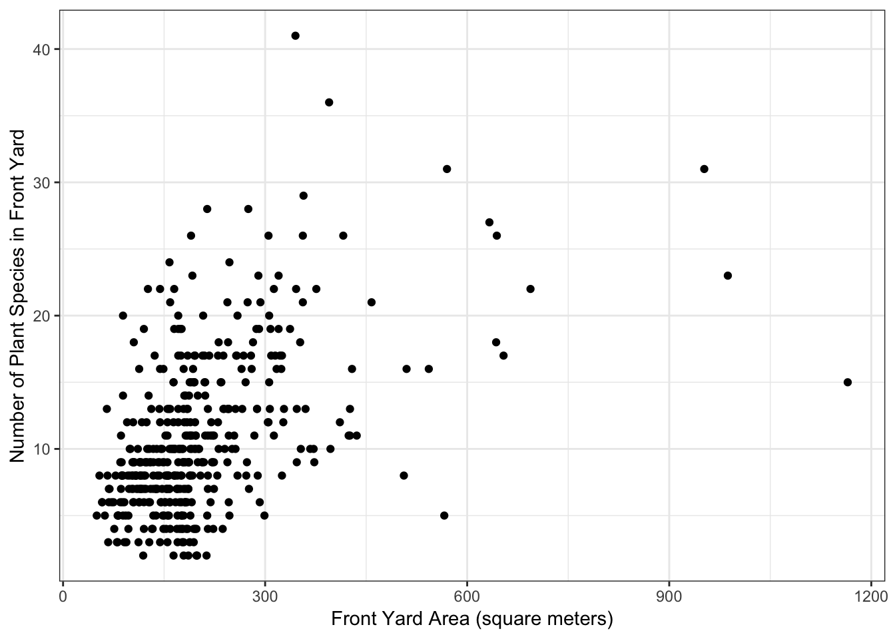
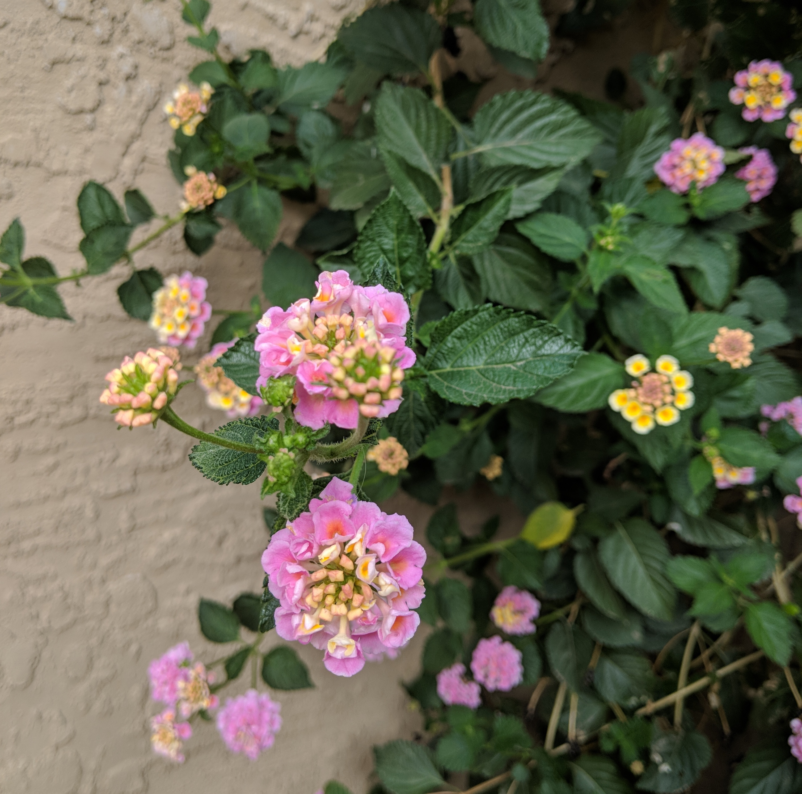
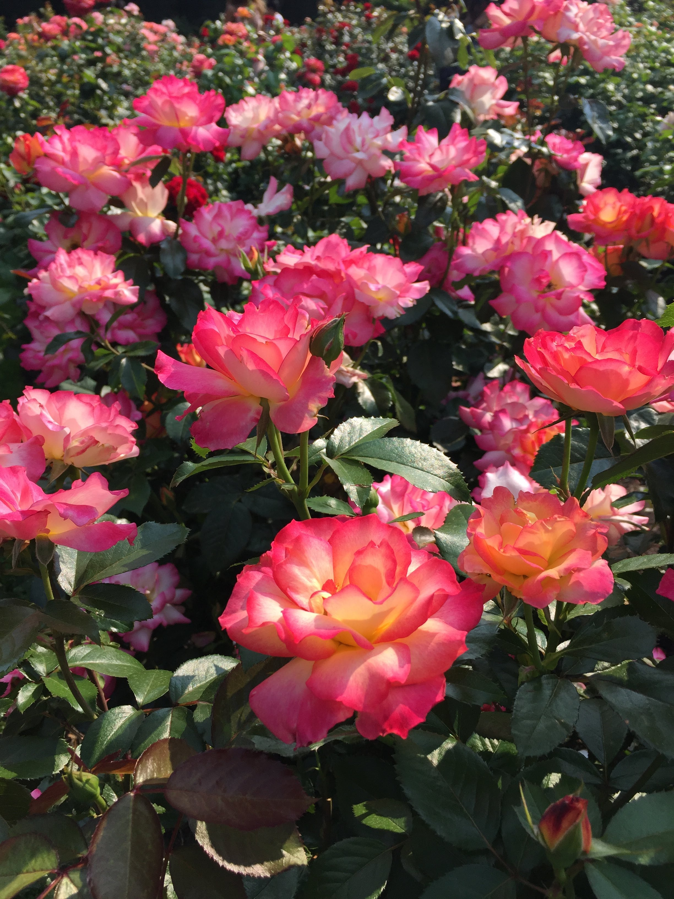

Some Observations From 2008
426 yards in 4 neighborhoods around Phoenix were originally surveyed in 2008 to determine the plant species present.
Out of our surveyed yards, about half had lawns and half did not.
Front yards had between 2 and 41 plant species (not including lawn grasses or weeds).

Four species were observed in more than 100 yards:
Lantana - in 166 yards 
Nerium oleander (Oleander) - in 125 yards 
Bougainvillea - in 161 yards 
Leucophullum frutescens (Texas sage) - in 120 yards 
Other common species included:
Hesperaloe parviflora (Red yucca)

Carissa macrocarpa (Natal plum)

Myrtus communis (Common myrtle)

Rosa (Rose)

Ruellia simplex (Mexican petunia)

Washingtonia (Fan palms)